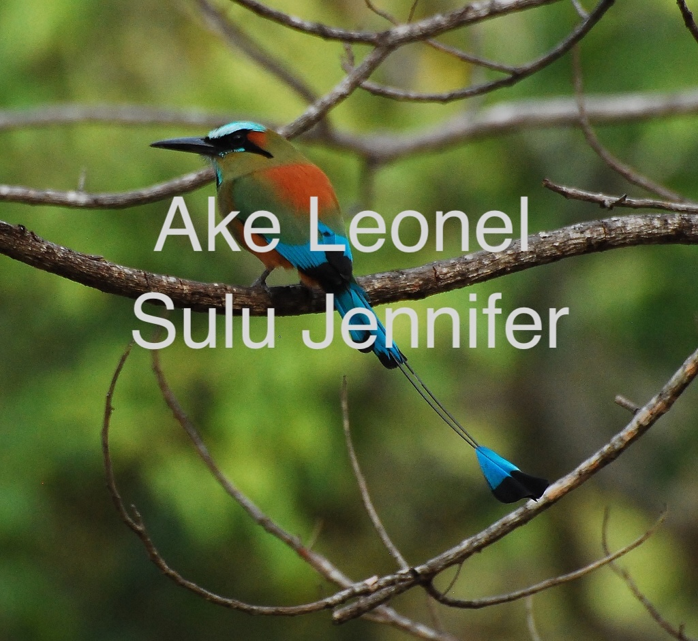
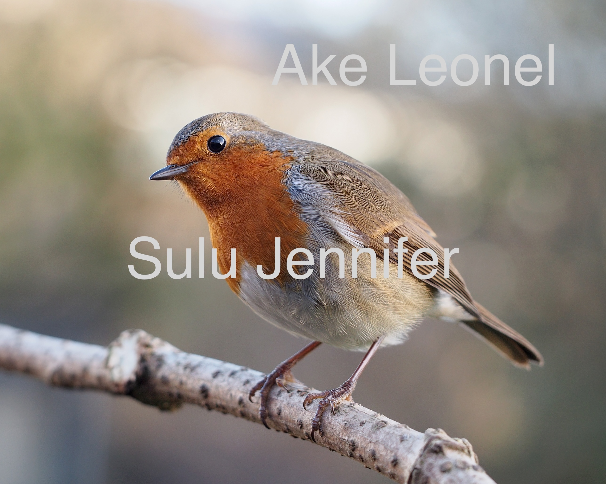
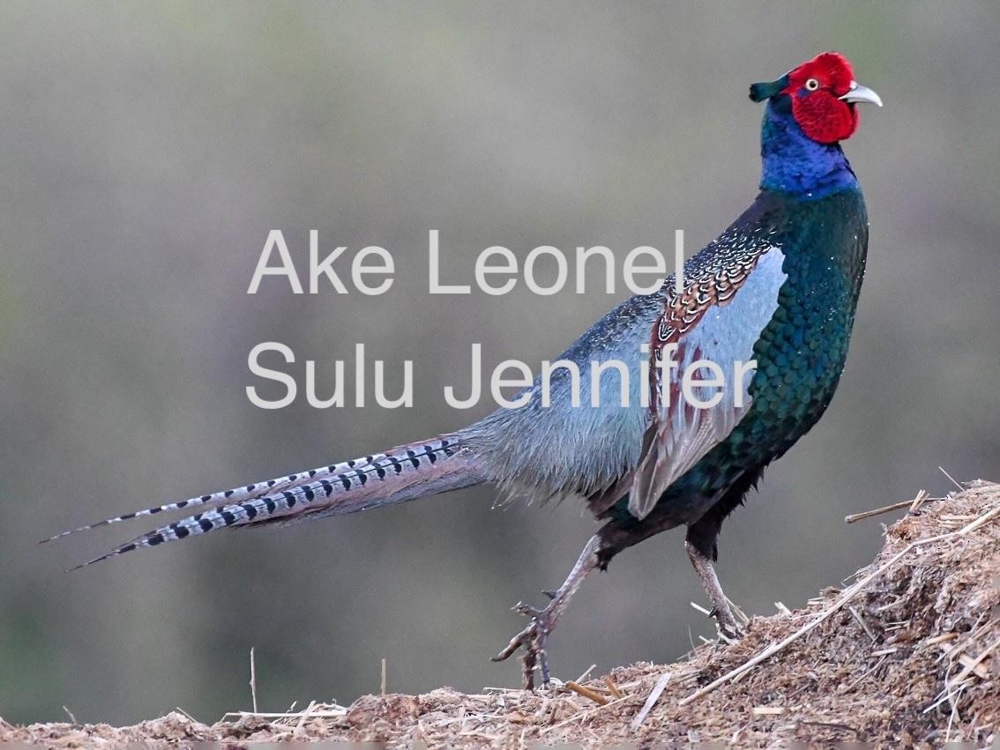

Toh
Famosa por su larga cola en forma de péndulo y su plumaje tornasolado. Es conocido como el "guardián de los cenotes"
Descubre algunos de los habitantes más sorprendentes del mundo

Famosa por su larga cola en forma de péndulo y su plumaje tornasolado. Es conocido como el "guardián de los cenotes"

Mide apenas 14 cm y destaca por su comportamiento territorial y curioso.

Los faisanes verdes reaccionan a los microsismos emitiendo fuertes llamadas de alerta similares a una trompeta y agitando sus alas antes de que los humanos puedan percibir el sismo.